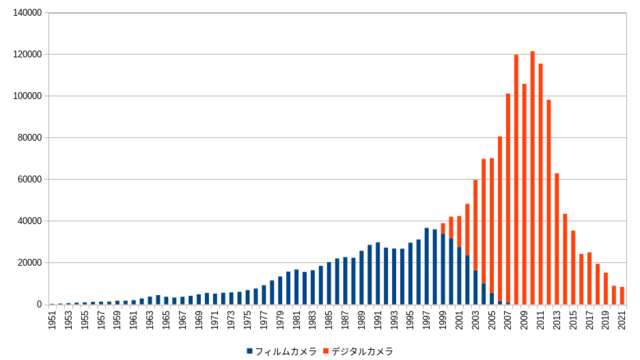

先日デジカメ info のPENTAXは今が他社の一眼レフユーザーを取り込む絶好の機会という記事とその記事に対するコメントを読んでいて、ひょっとしてすでにそういう議論を楽しむ我々の楽しい季節は過ぎ去ってしまったのかもしれないと思い、twitter でツイートしながらいろいろ考えを整理していったところ、現時点での PENTAX というかリコーイメージングがどこに向かってるのか見えてきたような気がした。
その思いつきについて長くなるかもしれないが、ここにまとめておくことにした。
下のグラフを見て欲しい。

このグラフは一般社団法人カメラ映像機器工業会が公開しているカメラ・交換レンズの総出荷 ( pdf )のうち銀塩カメラ、デジタルカメラの総出荷数の推移をプロットしたものだ。数字にはレンズ一体型カメラとレンズ交換式カメラの両方が含まれている。交換レンズの出荷数は含まれていない。
グラフを見てわかるようにレンズ固定式カメラとレンズ交換式カメラ ( 以下カメラと記す ) の出荷台数は 2000 年辺りまで徐々に増え 2000 年から急激に出荷台数が増加し、2010 年をピークとして一気に減少しており、2021 年の段階でのカメラ出荷台数は 1975 年ころの出荷台数にまで落ち込んでいる。
このグラフがそのまま推移していくと、遠からず数年中に年あたりの全カメラ出荷数が 1 万台を切るような事態がやってきてもおかしくないと予想される。これはメーカー単体でそうなるのではなく、業界全体の出荷数がそういう数字になるということに注意して欲しい。
カメラベンダーが頑張ればこの数字が上向くかというと、どう考えてもそれは無理がある。若者を中心とするフィルムカメラブームやミラーレス一眼へのリプレースが全カメラ出荷数を押し上げて 2010 年のような出荷数に再びなるのかというと、まぁどう考えてもそんなことはあり得ない。せいぜい市場の延命措置に貢献する程度の影響しか及ぼし得ないだろう。
というのは写真を撮るのに専用機などでなくスマホで十分だし別に撮影にしか使えないカメラなんて機械は世の中に不要、というのが圧倒的多数の考えだから。カメラに残って欲しいのは仕事で写真を撮る人を除けばカメラで写真を撮りたいという非常に少数の人たちだけだからだ。
大事なところなのでもう一度強調するが世界中のほぼ全てと言っていい主流の人たちは
カメラなんてこの世の中に存在しなくても一向にかまわない
そう思っている。厳しいがこれが現実だ。
つまり
遠からずカメラ市場は消滅する
可能性が非常に強い。
通常、企業の主要な機能は、収益を上げ、維持することが主要な機能である。そうすることで製品やサービスを社会に提供し、流通各社の売上にも貢献し、自社従業員の生活を保証するなど、そのような社会的責任を果たすのが使命だと言える。これは今も昔も変わらない。
ところが市場自体が消えようとするならば、企業というのはそのような環境に適応するだけでなく、上記責任を継続するために事業の方向を変えざるを得なくなる。提供する製品やサービスを変更し、貢献する対象を変更することが不可欠になるわけだ。
"まともな" 企業なら普通このような死んだ市場からは撤退する。業界全体での年間製品出荷台数が 1 万を切るとなるとそれはもう資本主義の世界では通常は市場が存在するとはみなされない。
つまりそう遠くない近年中にコンシューマ向けカメラ市場は消失する。
さて、そんななかで各カメラ・メーカーはどのような行動を取ると予測できるかというと、まともな企業なら従業員への給料もカバーできず、取引銀行や株主等のステークホルダーへの還元すらままならず、社会への影響も貢献にもならない事業は通常は廃止する。
コンシューマ向けカメラ市場が消失するのだから事業の売却など夢の夢だろうし、かつて存在したレコードプレーヤーやカセットレコーダーと同じ運命をカメラという機械がたどるのはほぼ間違いないものと思われる。
ただここで私達が思い出さないといけないのは、レコードプレーヤーもカセットレコーダーも、まだ細々と製造され販売されて続けていることだ。
市場と呼ぶにはあまりに小さな吹けば消し飛ぶような市場だが。コンシューマ向けカメラの市場はそのような細々とした市場に近年中になることがほぼ確実だと思われる。
以下かなり筆者の想像がかなり入っているが、大きくは外れてはないかと思う。
そんな厳しい経営環境の中でメーカーが「カメラという製品を今後も残すにはどうしたらいいのか」という問いへの答えの一つが、コンシューマ向けカメラ事業をその企業の主要事業と位置づけるのはもうやめてしまってコンシューマ向けカメラの開発、製造は文化事業である、と再定義することなのかもしれない。
もちろん「カメラ事業は文化事業である」なんてことは経営者としては絶対に口にはできない。しかし取締役会外秘文書にそのような文言があったとしても一向に不思議ではないのが昨今の市場の状態だ ( PENTAX がそうだとは言ってない )。
もしかするとカメラ市場が消失した後にコンシューマ向けカメラを作り続けるための自社の体質だけでなく流通各社との関係、ユーザとの関係を 0 から見直しているのが現在のリコーイメージングの姿なのかもしれない。
リコーイメージングはすでにシェアだとか他ベンダーのユーザの取り込みなど眼中にないのではないだろうか。カメラ市場がなくなるのだ。そこでやれニコンユーザを取り込む、キャノンユーザを取り込む、ミラーレスに参入してシェアを拡大する、そんなことを今更目指しても、もうカメラを作り続けることはできないところまで市場は来ている、リコー・イメージングはそう判断してるような気がする。
リコー・イメージングは強調している。ユーザとの距離感を縮める商いをこれから重視すると。市場という目に見えない雲のような存在の中で商いをするのではなく、目に見える「人」と商いをする、コンシューマカメラ市場はなくなるが我々はそれでも「人 ( 私達のことだ )」にカメラというものを提供し続けることができる方向に我々は舵を切る、そう宣言したのではないだろうか。そう考えれば昨今のリコー・イメージングの動きが合理的に説明できると思われる。
今後当然我々ユーザが望んでも手に入れることができない希望というのはあるだろう。というよりもそのような希望の大半は叶えられないことが普通に考えられる。これは提供したくてもできない状況にまで市場が縮小するからに他ならない。
それでもカメラを使い続けるか。私達が試される時期は待ったなしで目の前だ。
P.S.
メーカーと流通、ユーザはカメラというものを守るための運命共同体になるのかもしれない。
ーーカメラと共にあらんことを